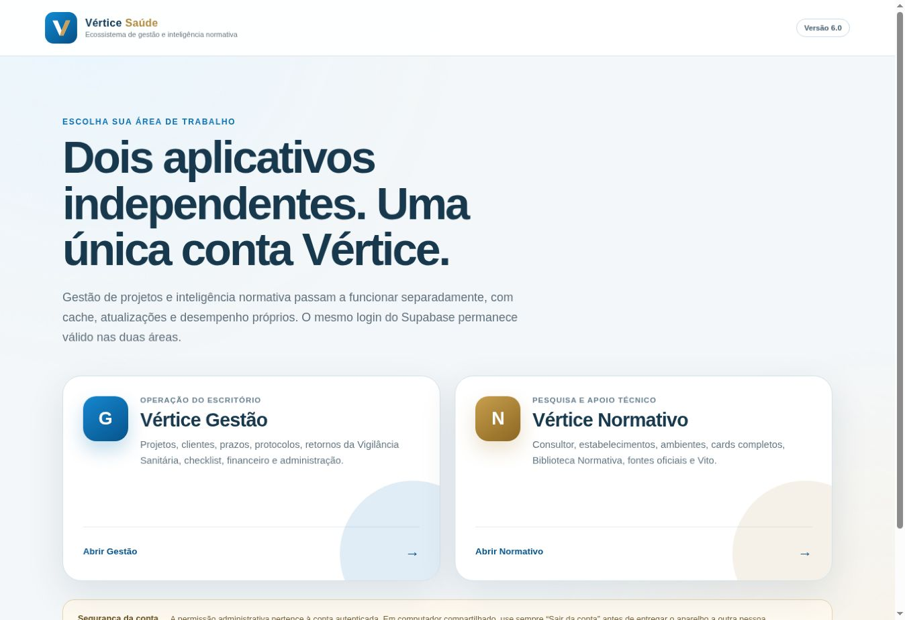
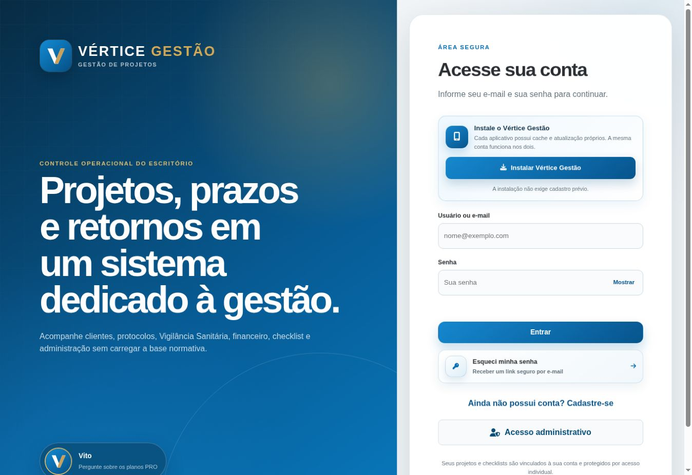
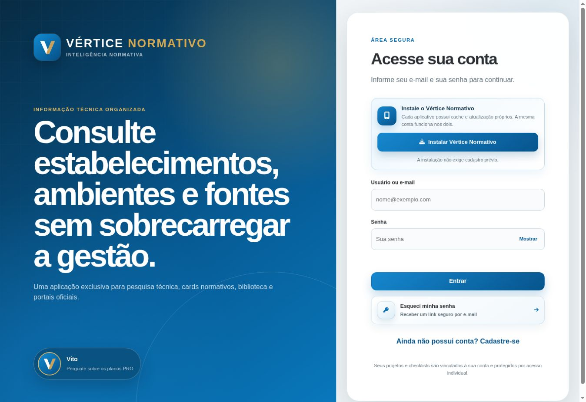

Gestão de projetos
Cadastro, prazos, protocolos, valores, observações e retornos dos órgãos.
Tecnologia para quem projeta o cuidado
Organize projetos, checklists, referências oficiais e conferências técnicas em uma plataforma criada para a rotina profissional.
Apoio técnico com responsabilidade profissional.
Projeto arquitetônico · Revisão técnica
Aplicativo em uso
Uma conta dá acesso a dois ambientes independentes: gestão operacional do escritório e inteligência normativa para apoio técnico.



O acesso para terceiros será liberado em breve.
Fluxo de trabalho
Um processo contínuo que conecta análise, organização e verificação para decisões técnicas mais seguras em cada etapa do projeto.
Estruture o projeto com referências oficiais e boas práticas desde o início.
Centralize checklists, modelos e documentos para manter informações atualizadas.
Encontre ambientes, requisitos e pontos de conferência relacionados ao projeto.
Antecipe pendências e não conformidades com mais clareza.
Continue a rotina com instalação PWA e recursos preparados para uso offline.
Recursos essenciais
Cadastro, prazos, protocolos, valores, observações e retornos dos órgãos.
Revisão estruturada em etapas e vinculada a cada projeto.
Referências oficiais e registros próprios organizados por aplicação.
Pesquisa organizada por tipo de estabelecimento e ambiente.
Instalação no celular ou computador após o primeiro carregamento.
Responsabilidade técnica
O Vértice Saúde apoia a conferência e a gestão do trabalho, mas não substitui a leitura da norma na fonte oficial, a verificação da versão vigente, a legislação estadual e municipal, o enquadramento da atividade nem a decisão do profissional habilitado.
Falar com a VérticeLançamento
O aplicativo ainda não está liberado para terceiros. Assim que o lançamento ocorrer, esta página receberá o link oficial para download.